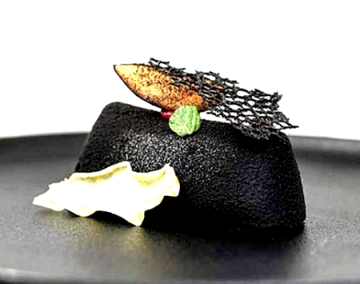

Ptysia z marakują i ciemną czekoladą
Mus limonkowo-kokosowy z tapioką i śliwką

MUS LIMONKA/KOKOS
Mleczko kokosowe
Sok z limonk
Cukier krysztal
Lstków żelatyn
Śmietana 36%
280g
120g
125g
6 listków
250g
PRZYGOTOWANIE:
- Mleczko kokosowe , sok z limonki i cukier podgrzać.
- Dodać namoczoną wcześniej żelatynę i ostudzić wszystko do 35 stopni.
- Połączyć masę z napowietrzoną śmietaną (ubij śmietanę mikserem).
- Masę przełóż do dowolnej (najlepiej silikonowej) foremki, którą napełnij do 2/3 jej wysokości. Odstaw do schłodzenia.
- Mus nie może do końca zastygnąć
TAPIOKA
Kasza moniaku (tapioka)
Woda
Mleczko kokosowe
Ksylitol
Trawa cytrynowa
PRZYGOTOWANIE:
- Tapiokę zalej ciepłym mlekiem kokosowym i wodą, dodaj trawę cytrynową. Odstaw do ostygnięcia.
- Po ostygnięciu dodaj cukier i gotuj całość około 15 minut do czasu, aż perełki tapioki staną się przezroczyste i miękkie.
- Do formy z musem limonkowo-kokosowym szprycuj tapiokę. Resztę formy uzupełnij pozostałą częścią musu limonowo-kokosowego. Mocno schłodź.
PRZYGOTOWANIE:
- Śliwkę umyj, wyjmij pestkę i pokrój na 8 równych części.
- Do garnka włóż miód i pokrojoną śliwkę.
- Jak śliwka zacznie się rumienić wyjmij ją i odstaw do wystygnięcia.
- Śliwką udekoruj deser.
Powrót do przepisów